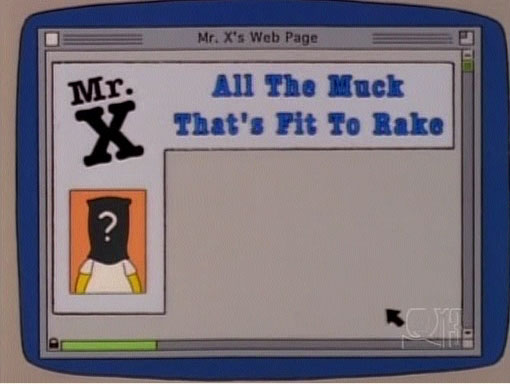

Mr. X
Mr. X was a website made by Homer after his first website failed to gain many hits. It is used to broadcast gossip and news to the citizens of Springfield, usually to delight.
Mr. X

The Mr. X homepage
Use
Gossips and news website
Real Website?
Yes (see below)
First Appearance
"The Computer Wore Menace Shoes"